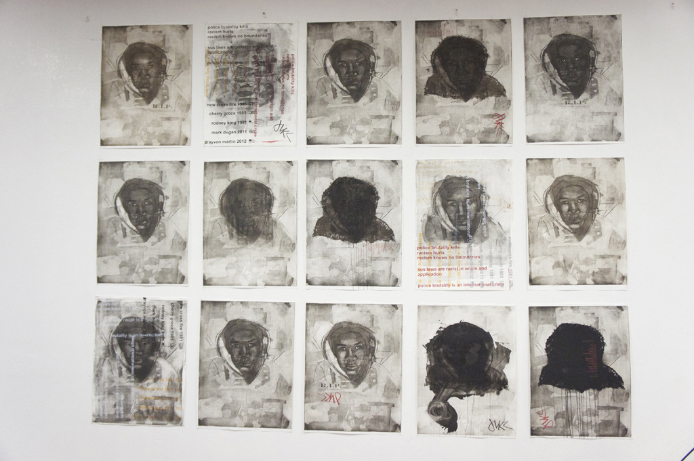
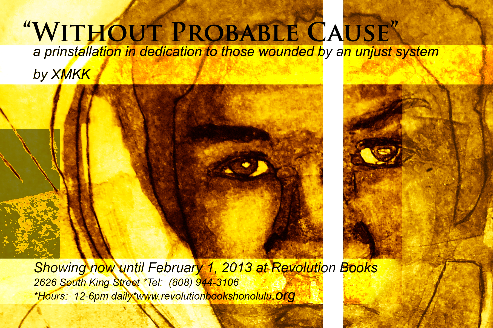
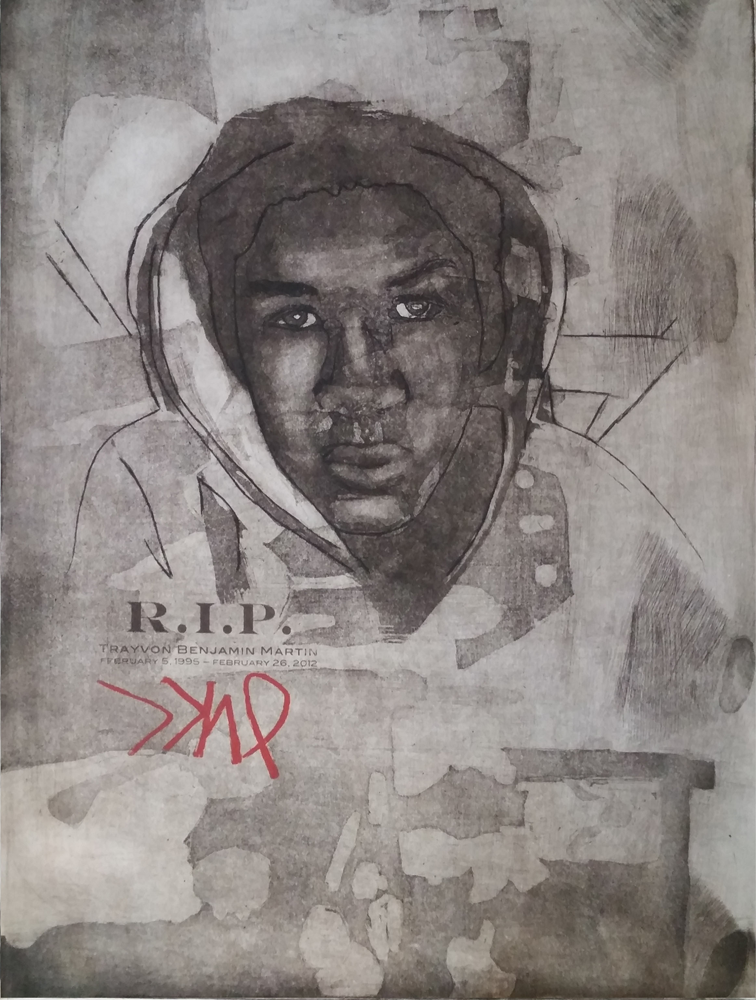
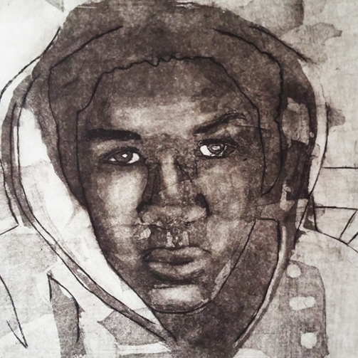

Without Probable Cause
Print installation dedicated to Trayvon Martin and to others like him whose lives were taken prematurely through acts of discriminatory vigilantism and police brutality.
Here you see a revised version of the original flier used to promote my print art show dedicated to Trayvon Martin and a discussion about police brutality especially in the US and in England. Also are some images of the wall dedicated to mixed media prints done in his honor.
This work and the show helped me understand how art can positively engage people in hard discussions. These images demonstrate my passion for portraiture, screen printing, intaglio, digital art and social change. They also remind me that life is not always fair but it is ever fleeting and the fight for social justice, better gun regulation and police reform are as relevant as always.

Selected Prints

